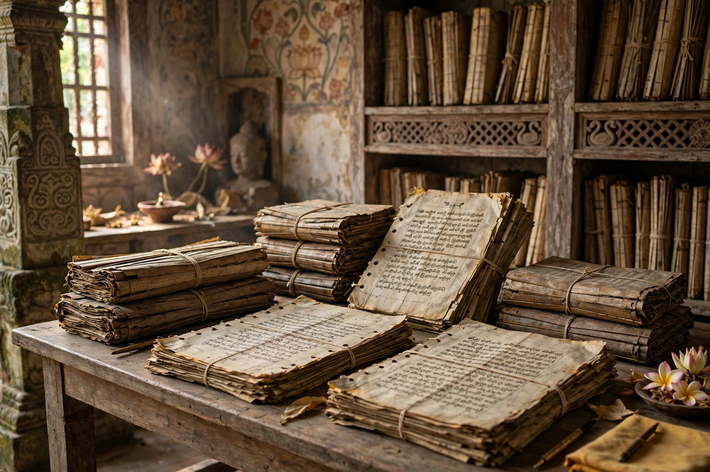

| Dipavamsa | |
|---|---|
 Palm-leaf folios of the chronicle | |
| Meaning | "Chronicle of the Island" |
| Date | c. 3rd–4th century CE |
| Language | Pali |
| Subject | Early history of Buddhism and the kings of Sri Lanka |
| Superseded by | Mahavamsa |
The Dipavamsa ("Chronicle of the Island") is the oldest surviving historical chronicle of Sri Lanka, composed in Pali probably in the 3rd or 4th century CE. Written in rough, often awkward verse, it records the coming of Buddhism to the island and the succession of its early kings, and it served as the principal source for the later, more polished Mahavamsa.
The Dipavamsa begins with the Buddha's legendary visits to Lanka and recounts the Buddha's lineage and life, the first Buddhist councils, and the mission of Mahinda under Ashoka. It then follows the kings of Anuradhapura from Prince Vijaya — whose landing it dates to the day of the Buddha's death — down to King Mahasena in the 4th century CE. Along the way it preserves the arrival of Sanghamitta with a sapling of the Bodhi tree, chronology of the early Sangha, and lists of nuns and elders found nowhere else.
Compared with the Mahavamsa, the Dipavamsa is clumsier in style — its Pali is irregular, and some passages appear to be unassimilated extracts from the old Sinhala commentaries (Atthakatha) kept at the Mahavihara monastery. Precisely because it is less worked over, scholars value it as a window on the underlying sources: where the two chronicles differ, the Dipavamsa sometimes preserves the older tradition. It is not, however, fully independent evidence, since both draw on the same monastic archive.
The text was first edited and translated into English by Hermann Oldenberg in 1879, a landmark in the recovery of Sri Lankan history. Together with the Mahavamsa and the later Culavamsa, it gives Sri Lanka one of the longest continuous chronicle traditions in the world.